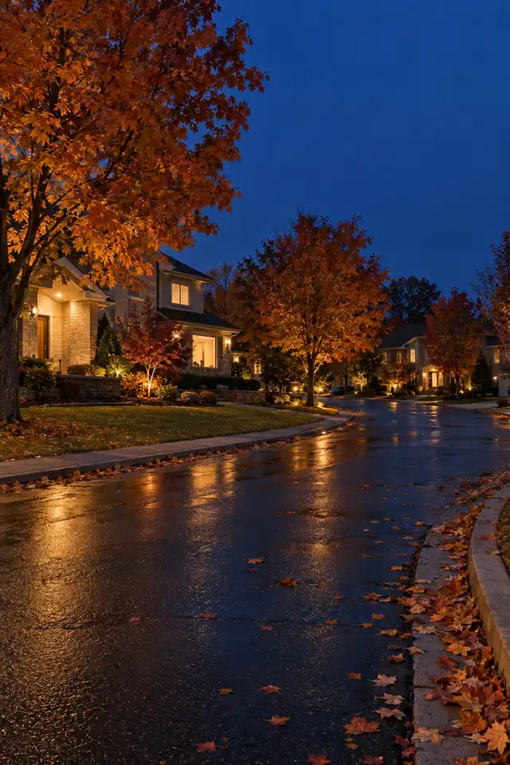

זמנים היינט
לויט דער זון אין מאנסי, אויסגערעכנט אויף אייער טעלעפאן. פאר א הלכה־שאלה פרעגט א רב.

מאנסי
דריקט אויפן לאגא
ברוכים הבאים קיין מאנסי
אלעס וואס איר דארפט – אויף איין ארט
לויט דער זון אין מאנסי, אויסגערעכנט אויף אייער טעלעפאן. פאר א הלכה־שאלה פרעגט א רב.
לאדנט…
 מאנסי אמאלדי געשיכטע – פון דער באן־סטאנציע אין 1841 ביז היינטאריין ›
מאנסי אמאלדי געשיכטע – פון דער באן־סטאנציע אין 1841 ביז היינטאריין › מאנסי היינטדי שטעטלעך און געגנטן ארום מאנסיאריין ›
מאנסי היינטדי שטעטלעך און געגנטן ארום מאנסיאריין › יידישקייטקהילות, שולן און מוסדותאריין ›
יידישקייטקהילות, שולן און מוסדותאריין › פארןאויטאבוסן קיין וויליאמסבורג און בארא פארק, באן און מעראריין ›
פארןאויטאבוסן קיין וויליאמסבורג און בארא פארק, באן און מעראריין › עסן און איינקויפןשפייז־געשעפטן, בעקעריי, רעסטאראנטן און ספריםאריין ›
עסן און איינקויפןשפייז־געשעפטן, בעקעריי, רעסטאראנטן און ספריםאריין › נאטור און פארקןהארימאן, אזערעס און שטעגן אין וואלדאריין ›באפעלקערונגדי ציפערן פון דער פאלקסציילונגאריין ›
נאטור און פארקןהארימאן, אזערעס און שטעגן אין וואלדאריין ›באפעלקערונגדי ציפערן פון דער פאלקסציילונגאריין › בילדערמאנסי אין אלע צייטן פון יאראריין ›
בילדערמאנסי אין אלע צייטן פון יאראריין ›די געשיכטע פון מאנסי
פאר הונדערטער יארן האבן אין דער געגנט געוואוינט די מונסי, א שבט פונעם לענאפע פאלק. אין מאנסי גלען, אביסל מערב פון וואו וועג 59 טרעפט זיך מיט וועג 306, האט מען געפונען אסאך אלטע זאכן פון זיי, און מען זעט דארט נאך היינט שטיין־היילן.
ווען די ניו יארק און עריע באן איז דורכגעגאנגען דורכן גלען, האט מען געבויט א באן־סטאנציע. זי האט באקומען דעם נאמען מאנסי, נאך די מונסי אינדיאנער, און אזוי האט דער גאנצער ארט באקומען זיין נאמען.
הרב שרגא פייוועל מענדלאוויטש האט געקויפט א פלאץ אין מאנסי, כדי אויפצוהייבן דאס לערנען פון מלמדים. דער ארט, „אש דת“, האט געהאט צוויי געביידעס אויף 16 אקער.
אש דת איז געווארן „בית מדרש עליון“, דער ערשטער יידישער מוסד אין מאנסי.
יידן פון ניו יארק שטאט האבן געזוכט ביליגערע הייזער פאר זייערע וואקסנדע פאמיליעס, און אנגעהויבן זיך באזעצן אין מאנסי, כדי צו קענען לעבן אינאיינעם לויט דער הלכה.
מאנסי איז נאך געווען א קליין דערפל מיט נאר איין ליכט־סיגנאל אויפן וועג און איין ישיבה.
דער סקווירער רבי, הרב יעקב יוסף טווערסקי, האט געקויפט א מילך־פארם פון 130 אקער לעבן ספרינג וואלי. דאס איז געווען דער אנהייב פון ניו סקווער.
נאך א געריכט־אורטייל איז ניו סקווער געווארן אן אייגן שטעטל, מיט אייגענע בוי־געזעצן.
הגאון רבי יעקב קאמענעצקי איז אריבערגעקומען קיין מאנסי, און דארט געוואוינט און געלערנט ביז זיין פטירה אין 1986.
הרב עזריאל טאובער מיט א גרופע בעלי בתים האבן געקויפט לאנד אין מאנסי פאר דער אמעריקאנער ישיבה פון אור שמח.
חסידי וויזשניץ האבן געגרינדעט דאס שטעטל קאסער (כתר), כדי מען זאל קענען בויען מער הייזער אויף ווייניגער פלאץ.
אין מאנסי זענען שוין געווען 112 שולן און 45 ישיבות.
לויט דער פאלקסציילונג פון 2020 וואוינען אין מאנסי 26,954 מענטשן, און מער ווי האלב פון זיי זענען קינדער.
מקור: וויקיפעדיע מקור: וויקיפעדיע מקור: וויקיפעדיע מקור: וויקיפעדיע
‹ צוריק צום הויפט זייטלדי שטעטלעך און געגנטן ארום מאנסי (איינוואוינער לויט 2020)
מאנסי ליגט אין דער שטאט ראמאפא, אין ראקלאנד קאונטי, בערך 30 מייל צפון פון ניו יארק שטאט. די גאנצע שטאט ראמאפא האט 148,919 איינוואוינער (2020) – די גרעסטע שטאט אין דער מדינה ניו יארק אויסער לאנג איילאנד. די הויפט־וועגן זענען וועג 59, וועג 306 און מעיפל עוועניו.
מקור: וויקיפעדיעא געגנט אין דער שטאט ראמאפא, נישט קיין אייגן שטעטל. דער צענטער פון די חרדישע יידן אין ראקלאנד, אזוי אז דער נאמען „מאנסי“ ווערט גענוצט פאר די גאנצע ארומיגע געגנט.
מקור: וויקיפעדיעגעגרינדעט אין 1990 דורך חסידי וויזשניץ. עס ליגט אויף וועג 306 און איז אינגאנצן ארומגערינגלט פון מאנסי. לויט דער ציילונג פון 2010 איז עס געווען דאס געדיכטסטע שטעטל אין דער מדינה ניו יארק.
מקור: וויקיפעדיעדאס שטעטל פון די סקווירער חסידים. געגרינדעט אין 1954, אן אייגן שטעטל זינט 1961.
מקור: וויקיפעדיעדער צווייט־גרעסטער ארט אין ראקלאנד. דא ענדיגט זיך די באן־ליניע וואס פירט קיין האבאקען.
מקור: וויקיפעדיעא געגנט צפון פון עירמאנט און מזרח פון מאנטעבעלא. אמאל האט עס געהייסן מעכאניקסוויל.
מקור: וויקיפעדיעאן אייגן שטעטל זינט 1991, צוזאמענגעשטעלט פון טאלמאן, עירמאנט און דרום מאנסי.
מקור: וויקיפעדיעצווישן וויאלא און פאמאנע, נעבן הארימאן פארק.
מקור: וויקיפעדיעאן אייגן שטעטל זינט 1983, דרום פון וועסלי הילס.
מקור: וויקיפעדיעאן אייגן שטעטל זינט 1986. פריער האט מען עס גערופן „דרום ספרינג וואלי“.
מקור: וויקיפעדיעאן אייגן שטעטל זינט 1967, אויף דער גרענעץ פון ראמאפא און האווערסטרא.
מקור: וויקיפעדיעאן אייגן שטעטל אין ראמאפא, נעבן די בערג פון הארימאן.
מקור: וויקיפעדיעדי ציפערן פון מאנסי
די שפראך־ציפערן קומען פון וויקיפעדיע, און עס שטייט נישט פון וועלכן יאר זיי זענען.
מאנסי איז דער גרעסטער חסידישער צענטער אין אמעריקע אויסער ניו יארק שטאט: בערך 5,400 חסידישע הויזגעזינדער, וואס איז בערך 4.2% פון אלע חסידים אויף דער וועלט.
אין קאסער איז די מיטעלסטע עלטער נאר 14 יאר, און 57.9% פון די איינוואוינער זענען אונטער 18.
מקור: די אמעריקאנער פאלקסציילונג מקור: וויקיפעדיע מקור: וויקיפעדיע מקור: וויקיפעדיע
‹ צוריק צום הויפט זייטלקהילות, שולן און מוסדות
אין מאנסי זענען פארהאן גרויסע קהילות פון סאטמאר, וויזשניץ מאנסי, צאנז און בעלזא. אויך וואוינען דא די רביים פון בארדיטשוב, ליזענסק, ניקלשבורג, סאמבור, סאסוב, שינאווע, ספינקא און סטאניסלאוו, און נאך.
ניו סקווער איז דאס שטעטל פון סקווירא, און קאסער – פון וויזשניץ.
מקור: וויקיפעדיערב: הרב אברהם הערש וואזנער
13 מאנסי בולעוואר, מאנסי
1 מאנסי בולעוואר, מאנסי
25 פיליס טעראס, מאנסי
דער ערשטער יידישער מוסד אין מאנסי (1944), אויפן ווינקל פון מעין סטריט און מעיפל עוועניו.
73 מעין סטריט, מאנסי
דער אמעריקאנער צווייג פון דער ישיבה, אין מאנסי זינט 1979.
244 וועג 306, מאנסי
אין 1997 זענען אין מאנסי שוין געווען 112 שולן און 45 ישיבות; היינט זענען דא נאך פיל מער.
‹ צוריק צום הויפט זייטלווי אזוי קומט מען אהין און צוריק
א פריוואטע אויטאבוס־פירמע פון ספרינג וואלי וואס פירט יעדן טאג פון מאנסי און ניו סקווער קיין בארא פארק, וויליאמסבורג און מאנהעטן, און צוריק. ס׳איז אויך דא א ליניע קיין קרית יואל און קיין לעיקוואוד.
מקור: דעם ארט׳ס אייגענער וועבזייטל מקור: דעם ארט׳ס אייגענער וועבזייטל
פון דער ספרינג וואלי סטאנציע, אויף מעין סטריט (וועג 45) לעבן וועג 59, פארט די ניו דזשערזי באן (די פאסקעק וואלי ליניע) ביז האבאקען, פון וואנען מען קען ווייטער פארן קיין ניו יארק.
מקור: וויקיפעדיע מקור: וויקיפעדיעדי אויטאבוסן פון ראקלאנד פארן אויף די הויפט־וועגן איבער גאנץ ראקלאנד. דער צענטער איז די ספרינג וואלי סטאנציע, און אין מאנסי שטעלט מען זיך אפ ביי בעיטס דרייוו און וועג 59.
פאר די וואס פארן מיטן אויטא איז דא א גרויסער פלאץ צו לאזן דעם אויטא אין מאנסי, ביי וועג 59 (אריינגאנג פון פרידמאן וועי), מיט 324 ערטער, אן א דערלויבעניש.
מקור: ראקלאנד קאונטי מקור: ראקלאנד קאונטי
שפייז־געשעפטן, בעקעריי, רעסטאראנטן און ספרים
גרויסע שפייז־געשעפט אויף וועג 59.
59 וועג 59, מאנסי
27 ארטשארד סטריט, מאנסי
455 וועג 306, מאנסי
80 וועסט סטריט, ספרינג וואלי
126 מעיפל עוועניו, ספרינג וואלי
אין טאון סקווער מאל, אויף וועג 59. פרייטאג און שבת פארמאכט.
59 וועג 59, מאנסי
אין עטריום פלאזע.
86–92 סעקארע ראוד, מאנסי
304 וועג 59, סאפערן
שעהן און טעלעפאן־נומערן קענען זיך טוישן. רופט אן פאר איר גייט.
‹ צוריק צום הויפט זייטל
הארימאן, אזערעס און שטעגן
48,556 אקער, די צווייט־גרעסטע פארק פון דער מדינה ניו יארק, 30 מייל צפון פון ניו יארק שטאט. 31 אזערעס, טייכלעך, און איבער 200 מייל שטעגן אין וואלד.
די פארק איז אנגעהויבן געווארן נאך דער מתנה פון 10,000 אקער און א מיליאן דאלער וואס מערי הארימאן האט געגעבן דער מדינה.
די גרעסטע אזערע אין הארימאן, לעבן סלאוטסבורג. דער ברעג צום באדן איז פארמאכט זינט 2011; מען קען נאך אריינלאזן שיפלעך מיט א דערלויבעניש.
א פארק אין מאנטעבעלא. דער קאקיאט שטעג הייבט זיך אן ביים פלאץ פאר די אויטאס און פירט אריין אין הארימאן פארק.
א קליינער פארק אויף וועג 59, וואו די מונסי אינדיאנער האבן אמאל געוואוינט. מען זעט נאך די אלטע שטיין־היילן.
א גרויסע פארק מיט שטעגן צום גיין, פלעצער פאר קינדער און טישן אין פרייען.
355 נארט מעין סטריט, ניו סיטי
מאנסי אין אלע צייטן פון יאר
די בילדער זענען געמאכט דורך קאמפיוטער, ווי א בילד פון א מאנסי־גאס – נישט קיין אמתע פאטאגראפיעס פון באשטימטע ערטער.
‹ צוריק צום הויפט זייטל
דריקט אויף א נומער צו רופן
אין א סכנה – רופט גלייך 911 אדער הצלה.
‹ צוריק צום הויפט זייטל
צו האבן דעם וועגווייזער ווי אן אייגענע אפליקאציע: עפנט דעם בלאט, דריקט אויף „טיילן“ אדער אויף די דריי פינטלעך, און קלייבט „צולייגן צום הויפט־עקראן“.